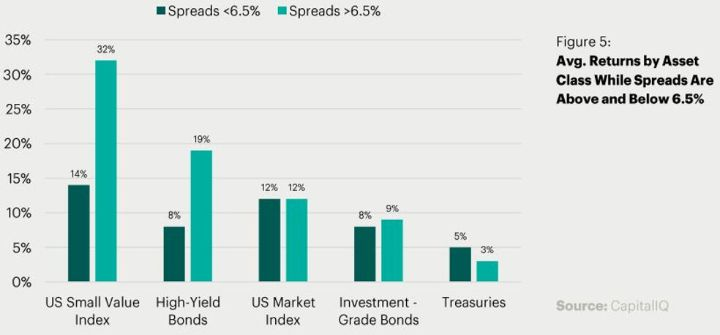

Viikon kuumat linkit
Linkkejä matkan varrelta... hyvää viikonloppua!
"It’s dangerous to short stocks. Being short and seeing a promoter take a stock up is very irritating. It’s not worth it to have that much irritation in your life. We don’t like trading agony for money.” - Charlie Munger
Viime vuonna Beyong Meat. Sitä edellisenä kannabisosakkeet. Sitä edellisenä kryptovaluutat. Aina on joku kupla. Tänä vuonna on saatu jo ensimmäinen siltä vaikuttava: Tesla. Vielä viime kesänä shortaajat pitivät sitä potentiaalisena konkurssitapauksena. Siitä yhtiö on petrannut ja osake on lähes viisinkertaistunut. Twitter-feedissä ei muusta puhutakaan kuin Teslasta. Retail-sijoittaja on löytänyt osakkeen. Sellaiset tuttavat, jotka normaalisti eivät osakkeista puhu, ovat meiltäkin kysyneet, pitäisikö Teslaa ostaa. Vai hedge fundien shorttien koveerausta? Markkinatakaajien johdannaisten suojausta? Oikeaa ostoa ESG-tarinalla? Seuraavassa pari valistunutta arvausta. “Professori valuaatio” Aswath Damodaran päätyi myös myymään viime kesänä hankitut osakkeet.
Parin viikon takaisissa linkeissä näimme proffa Gallowayn ennustuksia, joissa hän mainitsi regulaation pikemminkin mahdollisuutena kuin uhkana isoille teknologiayhtiöille. Jos näitä yhtiöitä lähdetään pilkkomaan sääntelyllä, voi yhtiöiden osien summa olla suurempi kuin köntän. Mekin olemme aihetta sivunneet (omistamme Googlea ja Amazonia). Näissä yhtiöissä voi argumentoida olevan ”konglomeraattiale”. Regulaatiossa on myös se puoli, että se suosii isoja pelureita asettaen alalle tulon esteen. Uusien, pienempien on kalliimpaa kilpailla. Isot tekkiyhtiöt ovatkin alkaneet puhumaan regulaation puolesta, pyrkien ohjailemaan sitä heille suotuisasti. Regulaatiota kuitenkin tarvitaan, monellakin eri teknologioiden saralla. Lisäksi, toisin kuin yhtiöt väittävät, täyttävät ne monilta osin monopolin määritelmän.
Viimeisimmissä linkeissä esittäytyi myös Tyro Capital Managementin salkunhoitaja Dan McMurtrie. Heidän sittemmin julkaisemansa vuoden 2019 sijoittajakirje oli myös lukemisen arvoinen. Ei välttämättä uutta, mutta uusia näkökulmia vanhaan. Muun muassa sijoittajan tulisi ymmärtää oman fundanäkemyksensä lisäksi kursseja ohjaavia tekijöitä, kuten flow. Pitäisi ymmärtää mitä tapahtuu, eikä niinkään mitä pitäisi tapahtua, ja suhteuttaa se omaan sijoitustyyliin ja fundanäkemykseen. On sekä psykologisista että pakotettuja syitä, jotka ohjaavat pääomavirtoja. Arvosijoittajalle myös hyvä muistutus siitä, että joskus osake on halpa aivan syystäkin. Lisäksi käyvät läpi sijoituksiaan, joista Match ja Ubisoft ovat myös meillä seurannassa.
Koronavirus on puhuttanut viime aikoina. Seuraavassa kuusi tapaa, miten se tulee muuttamaan maailmaa niin hyvässä kuin pahassakin.
Video:
Charlie Munger esiintyi kuluneella viikolla Daily Journalin yhtiökokouksessa (hän on halltuksen pj). Fanit voivat käydä selaamassa parituntisen videon täältä. Ihan hirveästi ei tarjonnut uutta, mutta aina muutamia mielenkiintoisia pointteja/oppeja:
- Suurin osa lehdistä kuolee pois.
- Kiinalaiset, ollakseen kommunisteja, ovat tehneet paljon asioita oikein. Munger on yllättävän positiivinen Kiinan näkymiin. Hän on sijoitettuna Kiinaan ja uskoo monien kiinalaisten yhtiöiden kasvavan nopeammin kuin länsimaisten.
- Markkinat nyt eivät ole yhtä hurlumhei kuin 1970-luvun alun Nifty Fifty-hullutteluissa. Nolla/negatiivisen koron politiikka aiheuttaa
- Nykyisessä taloudessa yhtiöiden suojavallit ("moat") murtuvat yhä herkemmin. Kilpailukykyä on entistä vaikeampi pitää yllä.
- Teslasta sanoo ettei ostaisi tai myisi lyhyeksi. Viittaa vanhaan sitaattiin, että älä koskaan aliarvioi henkilöä, joka yliarvioi itsensä. Joskun hänkin voi onnistua.
- Jälleen toistaa, kuinka käyttökate (EBITDA) on huijausta.
- Valitse peli (markkinat, työ jne), jossa muut ovat tyhmiä ja itse viisas. Pitää pystyä myöntämään itselleen, jos peli on liian vaikea.
- Ja perus elämänohjeet: Valitse kuljettavaksesi korkean moraalin tie, koska sillä on vähemmän ruuhkaa. Älä uhriudu ja syytä muita. Mungerilla on "moraalinen velvollisuus" olla mahdollisimman rationaalinen. Tärkeintä on oppia myöntämään ja oppimaan omista virheistään. Paras tapa kasvattaa lapsi on, olla esimerkillinen roolimalli. Hyvä tapa nostaa onnellisuuttaan, on laskea odotuksiaan yleisesti.
Podcastit:
Software-yhtiöihin sijoittava VC, Benchmark Capitalin Chetan Puttagunta erittäin mielenkiintoisessa haastattelussa. Hän kertoo, miten enterprise softayhtiöt ovat kehittyneet nykypäivään ja miten hänen mielestään startupien pitäisi edetä. Suurin virhe hänen mielestään on, että lähdetään liian nopeasti skaalaamaan bisnestä (“Go slow to go fast”). Riskinä aina ovat takapakit, joista isommaksi skaalatussa organisaatiossa voi olla haastava ottaa uutta käännöstä. Koska SaaS-tuotekin on lopulta vain asiakasta varten, tulisi panostaa asiakassuhteisiin. Aluksi keskity vain pieneen joukkoon asiakkaita ja rakenna heille paras mahdollinen tuote. Paras tuote taas mahdollistaa orgaanisessa kasvun ilman panostuksia ja pitkät asiakassuhteet (äärettömyyttä lähestyvä LTV ja nollaa lähestyvä CAC). Enterprise SaaS ja pilvipalvelut ovat vasta lähteneet käyntiin.
Strukturoidut tuotteet räjähtävät aina ajoittain sekä sijoittajien että pankkien silmille. On hieman kyseenalaista, miksi retail-sijoittaja edes tarvitsee kyseisiä tuotteita. Pääasiassa retai-sijoittajillehan niitä myydään. Instituutionaaliset tai ammattimaiset sijoittajat, jotka johdannaisista ymmärtävät, voivat luoda rakenteen itse, jos haluavat, ja paljon kulutehokkaammin ja säilyttää joustavuuden tuotteen manageerauksen suhteen. Toki on varmasti järkeviäkin tuotteita, kuten esim. sellaisia, joihin retail-sijoittaja ei muutoin pääsisi käsiksi, kuten jokin OTC:na noteerattu credit-indeksi tms., kunhan niihin sijoittava ymmärtää riskit. Struksit lähtevät yleensä joko tasaisesta tai turvalliseksi muotoillusta tuotosta, joissa pääoma on turvattu tai riski rajattu. Siksi ne vetoavat retail-sijoittajiin. Sijoittaja kuitenkin aina luopuu jostain. Ja siksi ne ovat pankeille kannattavia tuotteita. Aikaisemmin korkeammat korot ja volatiilimmat markkinat mahdollistivat pankkien näkökulmasta rakenteen rahoittamisen. Nyt kun sekä korot että vola ovat tulleet alas, joutuvat pankit myymään entistä enemmän optioita, jotta sama määrä riskiä saadaan katettua. Se on johtanut siihen, että markkinoiden joskus lopulta korjatessa, tietyissä markkinan pisteissä (“autocall”, “knock-out”), joissa struksien rakenteet on määritelty purkautuvan (tuotteen riski siirtyy kokonaan pankille), ovat pankkien trading-deskit pakotettuja myymään alla olevaa indeksiä (esim. S&P500) luoden kiihtyvän myyntipaineen. Ilmeisesti joulukuussa 2018 (kun indeksit olivat alas huipuistaan 20%) oltiin erittäin lähellä tällaista pistettä ja lumivyöryn laukeamista. Nyt etenkin Koreassa tällaiset tuotteet ovat suositumpia kuin koskaan ja niillä voi olla jänniä seurauksia länsimaisissä pörsseissä. Erittäin kiintoisa ja hyvin selventävä haastattelu aiheesta!
Viikon kuva:
Jokainen uusi nousumarkkina saa yleensä uuden vetoryhmän. Jokainen bear-markkina taasen ajaa kaikki osakkeet samaan suuntaan - alas. Sellainen on ihmisluonne. Kun paniikki iskee, myydään kaikkea, mitä pystytään. Siksi historiallisia taantumia ja pörssiromahduksia tutkimalla, voi saada käsitystä siitä, miltä seuraava voi näyttää. Ihan vaan, jotta voi varautua ennaltaan. Seuraava työpaperi on tutkinut kahdeksan historiallista kriisiä lähtien vuodesta 1974. Kriiseissä credit-spreadit levähtävät ja tutkimus katsoo, miten eri varallisuusluokat ovat pärjänneet kun high yield spreadit ovat yli 6.5%. Erityisen kiintoisia olivat, miten osakkeet ovat pärjänneet tällaisina epävarmoina aikoina. Niistä seuraavat johtopäätökset:
- Yhtiöt, jotka tekevät positiivista tulosta pärjäävät ~50% paremmin kuin negatiivista tulosta tekevät (ovat vähemmän riippuvaisia ulkoisiin pääomamarkkinoihin)
- Yhtiöt, jotka tekevät positiivista kassavirta pärjäävät 100% paremmin kuin negatiivista kassavirtaa tekevät (sama kuin edellisessä)
- Parhaat ostopaikat syntyvät pienissä ja epälikvideimmissä osakkeissa (ostajan 12kk ja 24kk tuotto-odotus 30%+ ja 50%+ vs likvideimmille 3% ja 14%)
- Halvimpia osakkeita ostamalla on saanut merkittävimmät ylituotot (vastaavat tuotto-odotukset 40% ja 70% vs kalleimmat 3% ja 9%).
- Korkea velkaisuus on kaksiteräinen miekka: yhtäältä se voi ajaa yhtiön konkurssiin. Toisaalta, jos sen yhdistää ylläoleviin (positiivinen tulos/kassavirta, value) ja siihen, että yhtiö pystyy pienentämään velkaisuutta (nämä yhdessä = ei mene nurin), voi velkaisuus tuoda vipua matkalla ylös.
Paljon mielenkiintoista historiaa ja havainnollistavia kuvia!
